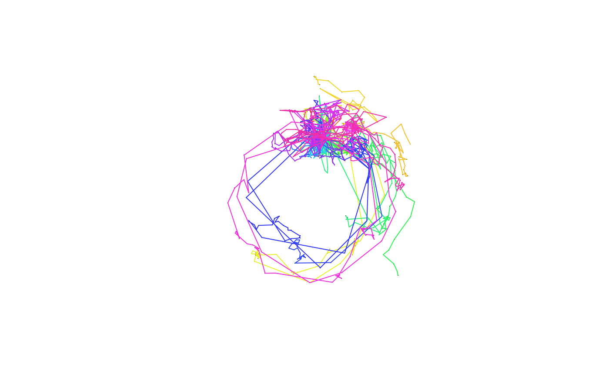

trip objectsR/AllMethod.R
trip-methods.RdCreate an object of class trip, extending the basic functionality
of SpatialPointsDataFrame by specifying the data columns
that define the "TimeOrdered" quality of the records.
trip(obj, TORnames, correct_all = TRUE) trip(obj) <- value # S4 method for trip,ANY,ANY,ANY [(x, i, j, ..., drop = TRUE)
| obj | A |
|---|---|
| TORnames | Either a |
| correct_all | logical value, if `TRUE` the input data is corrected for common problems |
| value | A 4-element character vector specifying the X, Y, DateTime coordinates
and ID of |
| x | trip object |
| i, j, … | indices specifying elements to extract |
| drop | unused but necessary for method consistency |
A trip object, with the usual slots of a
SpatialPointsDataFrame and the added
TimeOrderedRecords. For the most part this can be treated as a
data.frame with Spatial coordinates.
Track data often contains problems, with missing values in location or time, times out of order or with duplicated times. The `correct_all` argument is set to `TRUE` by default and will report any inconsistencies. Data really should be checked first rather than relying on this auto-cleanup.
Most of the methods available are by virtue of the sp package. Some, such
as split.data.frame have been added to SPDF so that trip has the same
functionality.
signature(obj="SpatialPointsDataFrame",
TORnames="ANY")
signature(obj="SpatialPointsDataFrame",
TORnames="TimeOrderedRecords")
signature(obj="ANY", TORnames="TimeOrderedRecords"):
create a trip object from a data frame.
signature(obj="trip", TORnames="ANY"): (Re)-create a
trip object using a character vector for TORnames.
signature(obj="trip", TORnames="TimeOrderedRecords"):
(re)-create a trip object using a TimeOrderedRecords object.
speedfilter, and tripGrid for simplistic
speed filtering and spatial time spent gridding.
d <- data.frame(x=1:10, y=rnorm(10), tms=Sys.time() + 1:10, id=gl(2, 5)) coordinates(d) <- ~x+y ## this avoids complaints later, but these are not real track data (!) proj4string(d) <- CRS("+proj=laea +ellps=sphere") (tr <- trip(d, c("tms", "id")))#> #> Object of class trip #> tripID ("id") No.Records startTime ("tms") endTime ("tms") tripDuration #> 1 1 5 2019-04-04 02:33:25 2019-04-04 02:33:29 4 secs #> 2 2 5 2019-04-04 02:33:30 2019-04-04 02:33:34 4 secs #> #> data.columns data.class #> 1 tms POSIXct **trip DateTime** #> 2 id factor **trip ID** #>## real world data in CSV mi_dat <- read.csv(system.file("extdata/MI_albatross_final.csv", package = "trip"), stringsAsFactors = FALSE) ## subset because the data is quite dense mi_dat <- mi_dat[seq(1, nrow(mi_dat), by = 10), ] mi_dat$gmt <- as.POSIXct(mi_dat$gmt, tz = "UTC") mi_dat$sp_id <- sprintf("%s%s_%s_%s", mi_dat$species, substr(mi_dat$breeding_status, 1, 1), mi_dat$band, mi_dat$tag_ID) coordinates(mi_dat) <- c("lon", "lat") ## there are many warnings, but the outcome is fine (sp_id == 'WAi_14030938_2123' has < 3 locations) mi_dat <- trip(mi_dat, c("gmt", "sp_id") )#> Warning: ordering input records by trip ID, then time#> Warning: removing trip IDs that have too few elements (<3): #> 'LMi_12143650_14257,WAi_14030938_2123'#> Warning: input looks like longitude/latitude data, assuming +proj=longlat +datum=WGS84#lines(mi_dat) ## ugly mi_dat_polar <- spTransform(mi_dat, "+proj=stere +lat_0=-90 +lon_0=154 +datum=WGS84") plot(mi_dat_polar, pch = ".")lines(mi_dat_polar)# NOT RUN { ## a simple example with the common fixes required for basic track data dat <- read.csv("trackfile.csv") names(dat) ## e.g. [1] "long" "lat" "seal" "date" "local" "lq" library(sp) coordinates(dat) <- c("long", "lat") ## date/times may be in a particular time zone, please check dat$gmt <- as.POSIXct(strptime(paste(dat$date, dat$local), "%d-%b-%y %H:%M:%S"), tz="GMT") ## if there are problems in the data, this will error tr <- trip(dat, c("gmt", "seal")) ## the following code tries to fix common problems ## remove completely-duplicated rows dat <- dat[!duplicated(dat), ] ## order the rows by seal, then by time dat <- dat[order(dat$seal, dat$gmt), ] ## fudge duplicated times dat$gmt <- adjust.duplicateTimes(dat$gmt, dat$seal) ## finally, convert to Spatial and create trip object coordinates(dat) <- c("long", "lat") tr <- trip(dat, c("gmt", "seal")) # }# NOT RUN { if (require(adehabitatLT)) { data(porpoise) porpoise <- as.trip(porpoise) proj4string(porpoise) <- CRS("+proj=utm +zone=21 +ellps=WGS84 +units=m +no_defs") summary(porpoise) } ## extended example to check that our projection metadata is correct library(maptools) data(wrld_simpl) library(rgeos) library(raster) ## 3 degrees either side (for half a zone . . .) ext <- as(extent(spTransform(porpoise, CRS(proj4string(wrld_simpl)))) + 3, "SpatialPolygons") proj4string(ext) <- CRS(proj4string(wrld_simpl)) ## crop to the buffered tracks, and project to its native CRS w <- spTransform(gIntersection(wrld_simpl[grep("United States", wrld_simpl$NAME), ], ext), CRS(proj4string(porpoise))) plot(w) lines(porpoise) # }